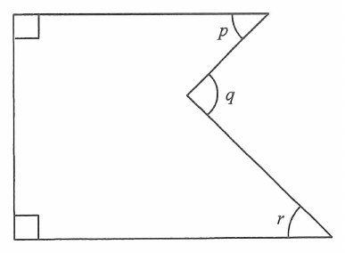

According to the figure, which of the following must be true?
In the figure, the shape is a pentagon with right angles at the top-left and bottom-left corners. Its right side is indented: \(p\) and \(r\) are the interior angles at the top-right and bottom-right vertices, and \(q\) is the notch angle at the concave (indented) vertex, measured outside the indented region.

The pentagon has \(5\) sides, so its interior angles sum to
\[ (5-2)\times 180^\circ = 3\times 180^\circ = 540^\circ . \]
The vertex carrying the notch angle \(q\) is concave.
The angle inside the
pentagon there is the reflex angle
The two left corners are right angles,
so the five interior angles are
\(90^\circ,\ p,\ 360^\circ-q,\ r,\ 90^\circ\). Hence
Careful — check the arithmetic again:
\[ 90^\circ+90^\circ+360^\circ = 540^\circ \] \[ \Rightarrow\ p - q + r + 540^\circ = 540^\circ \] \[ \Rightarrow\ p + r = q . \]Nothing forces the notch to be symmetric, so \(p=r\) is not forced — (A) is false.
The notch could be shallow or deep,
so \(q\) need not be \(90^\circ\) — (B) is false.
And since \(p+r=q\),
the sum \(p+q+r = 2q\) can vary, so (D) is false.
Question. In the figure, \(ABCDEF\) is a concave hexagon with \(\angle A=\angle B=90^{\circ}\). At the notch \(C\) the angle measured outside the polygon is \(q\), and the other interior angles are \(p\), \(r\) and \(s\). Which of the following must be true? A. \(p+r+s=q\) B. \(p+r+s=q+180^{\circ}\) C. \(p+r+s+q=180^{\circ}\) D. \(p+r+s-q=540^{\circ}\)